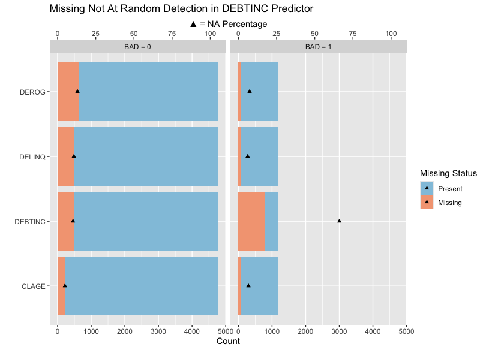
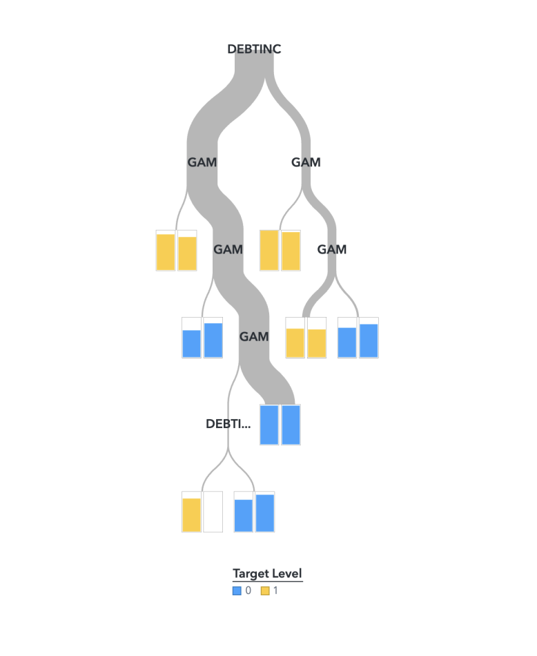

Modelling
Feature Selection
Feature selection is essential for building an interpretable scorecard and preventing model overfitting.
We first implemented a feature selection approach based on variance decomposition from one-way ANOVA. For each numeric feature, we measure how much of its total variance is explained by the class labels. Essentially,
Between-Group Sum of Squares (BSS) — variation of group means from the overall mean.
Within-Group Sum of Squares (WSS) — variation within each group.
Discriminating Power:BSS(Fisher’s ratio)
Explained Variance: BSS(BSS+WSS), equivalent to η² in ANOVA or R² in regression when the predictor is the group label.
| Feature | BSS | WSS | Discriminating Power | Explained Variance |
|---|---|---|---|---|
| DELINQ | 1.673869e+02 | 2.046390e+03 | 8.179620e-02 | 7.561147e-02 |
| DEROG | 7.631552e+01 | 1.075363e+03 | 7.096719e-02 | 6.626458e-02 |
| DEBTINC | 1.021754e+04 | 2.042693e+05 | 5.001997e-02 | 4.763716e-02 |
| NINQ | 1.284786e+02 | 8.063615e+03 | 1.593312e-02 | 1.568324e-02 |
| CLAGE | 2.901643e+05 | 2.295566e+07 | 1.264021e-02 | 1.248243e-02 |
| YOJ | 8.607138e+04 | 1.996412e+05 | 4.311304e-03 | 4.292797e-03 |
| LOAN | 4.556161e+08 | 4.464636e+11 | 1.020500e-03 | 1.019460e-03 |
| VALUE | 5.186812e+09 | 1.014004e+13 | 5.097232e-04 | 5.094635e-04 |
| MORTDUE | 1.005756e+09 | 6.935675e+12 | 1.450121e-04 | 1.449910e-04 |
| CLNO | 3.172226e+01 | 3.020103e+05 | 1.053072e-04 | 1.050206e-04 |
| REASON | 1.433814e-02 | 7.126318e+02 | 2.011999e-05 | 2.011958e-05 |
Based on discrimination power assessment, we identify the top five critical predictors: DELINQ, DEROG, DEBTINC, NINQ, and CLAGE. To further refine our set of predictors, we employ various feature selection methods using the SAS Feature Selection node:
Forward Selection
Backward Elimination
Bidirectional Elimination
Bayesian Logistic Regression
LASSO Regression
The table below summarises the variables recommended by each method for further modelling:
| DEBTINC | CLAGE | DELINQ | DEROG | NINQ | |
|---|---|---|---|---|---|
| Forward Selection | Yes | Yes | Yes | Yes | Yes |
| Backward Elimination | Yes | Yes | Yes | Yes | No |
| Bi-directory elimination | Yes | Yes | Yes | Yes | No |
| Bayesian Logistics Regression | Yes | Yes | Yes | Yes | No |
| LASSO Regression | Yes | Yes | Yes | Yes | No |
These techniques confirm the significance of DELINQ, DEROG, DEBTINC, and CLAGE for our model. Thus, the original twelve predictors are now reduced to four, simplifying the model and enhancing interpretability.
Imputation Algorithm
There are three primary mechanisms for missing data:
Missing Completely at Random (MCAR): Missingness is entirely random and does not depend on any observed or unobserved features. Eg: a survey respondent skips a question by accident.
Missing at Random (MAR): Missingness depends only on observed variables, not on the values of the missing data itself. For instance, if older respondents are less likely to answer a question about their income, the missingness is MAR because it can be explained by the age variable.
Missing Not at Random (MNAR): Missingness depends on unobserved variables, possibly related to the missing data itself. For example, if individuals with high debt-to-income ratios are less likely to report their income, the missingness is MNAR because it relates to the unobserved debt-to-income ratio.
After selecting four predictors DELINQ, DEROG, DEBTINC, and CLAGE for our model, we examine the mechanisms of missing values within these predictors to determine the most appropriate imputation strategies.

DEROG, DELINQ, DEBTINC, CLAGE), segmented by the BAD outcome (0 for no default, 1 for default). A significant discrepancy in missing data is observed in DEBTINC (debt-to-income ratio), particularly between non-defaulters (BAD = 0) and defaulters (BAD = 1), with defaulters less likely to report their debt-to-income ratio.This pattern suggests that the missingness in DEBTINC is informative and correlates with the likelihood of default. Thus, imputing missing DEBTINC values could introduce bias into the model. Instead, it is more effective to incorporate this missingness directly into the modeling process, which can be done using methods such as surrogate splits, creating separate branches for missing data, or using it in search criteria within decision trees.

DEROG, DELINQ, DEBTINC, CLAGE, target BAD): The diagonal plots display the count of missing data for each variable. The upper triangle plots shows side-by-side bar plots of missing values counts within and across pairs of variables. The lower triangle uses Venn diagrams to depict the proportion of mutually missing information within each pair.The pattern suggests that missingness in DELINQ (number of delinquent credit lines) and DEROG (number of derogatory reports) is correlated (MAR), with missing values often occurring in tandem.
When missingness occurs randomly across both defaulters and non-defaulters, as seen in CLAGE (age of oldest credit line in months), it is categorised as MCAR.
We decided to use the following imputation strategies within SAS Imputation Node based on the missing data mechanisms identified:
DEBTINC- No imputation to avoid biasCLAGE- distribution-based imputationGiven that
DELINQandDEROGare nominal variables, we use Decision Tree Imputation for Count data within the SAS Imputation Node to capture their MAR characteristics effectively.
The algorithm has been tested on a subset of the data, and the results are promising. Below figure provides a visual inspection of the distribution of imputed values against the original data.

CLAGE, DEROG, and DELINQ.Modeling
Discrimination Metrics (higher values indicate better discrimination):
KS: Kolmogorov-Smirnov statistic, with values above 0.60 indicating strong discrimination.Gini: Measures discriminatory power in credit scoring.AUC: Area Under the Curve, assessing the model’s ability to distinguish between classes.F1: Harmonic mean of precision and recall, representing accuracy.
Calibration Metrics (lower values indicate better calibration):
RASE: Root Average Squared Error.MCE: Misclassification Error.ASE: Average Squared Error.
After imputation on DEROG, DELINQ, CLAGE is complete, we proceed with model building, selection, and evaluation using SAS Viya Pipelines. To ensure interpretability for scorecard development, we focused on logistic regression, generalised additive models (GAM), and decision trees. However, DEBTINC has missing values, preventing its use with logistic regression or GAM, and decision trees offer only moderate interpretability. Thus, we adopted the following approach:
We first fit a GAM on IMP_CLAGE, IMP_DEROG, and IMP_DELINQ (imputed versions of CLAGE, DEROG, and DELINQ) to obtain log-odds for these variables. We use these log-odds to engineer a new feature, GAM. We then fit a decision tree using GAM and DEBTINC.

This hybrid GAM-Decision Tree model maintains interpretability while performing well in terms of both discrimination and accuracy, making it suitable for scorecard development.

IMP_CLAGE, IMP_DEROG, IMP_DELINQ, and DEBTINC). While our hybrid GAM-Decision Tree model ranks around the average level among models in this assessment, its overall performance is strong, with an F1 score of 0.86 and a KS value of 0.68, indicating high accuracy and solid discrimination power. Given its interpretability, this model is the optimal choice for scorecard development.Scorecard
The scorecard is constructed using our hybrid GAM-Decision Tree model. This process begins with calculating the GAM score based on IMP_CLAGE, IMP_DEROG, and IMP_DELINQ (CLAGE, DEROG and DELINQ after imputation). The GAM score calculation starts at 0 and is adjusted as follows:
| Variable | Condition | GAM Adjustment |
|---|---|---|
| IMP_DELINQ | IMP_DELINQ = 0 |
GAM = GAM + 2.57066154046 |
IMP_DELINQ = 1 |
GAM = GAM + 2.08231470274 |
|
IMP_DELINQ = 2 |
GAM = GAM + 1.32067935856 |
|
IMP_DELINQ = 3 |
GAM = GAM + 1.12671971708 |
|
IMP_DELINQ = 4 |
GAM = GAM + 1.06024767261 |
|
IMP_DELINQ = 5 |
GAM = GAM - 0.187270502707 |
|
IMP_DELINQ = 6 |
GAM = GAM - 1.16612086452 |
|
IMP_DELINQ = 7 |
GAM = GAM - 1.12016683131 |
|
IMP_DELINQ = 8 |
GAM = GAM - 0.815202415445 |
|
IMP_DELINQ = 10 |
GAM = GAM - 1.29377825181 |
|
IMP_DELINQ = 11 |
GAM = GAM - 1.27805891547 |
|
| IMP_DEROG | IMP_DEROG = 0 |
GAM = GAM + 2.56838053911 |
IMP_DEROG = 1 |
GAM = GAM + 1.88487325753 |
|
IMP_DEROG = 2 |
GAM = GAM + 1.36118958569 |
|
IMP_DEROG = 3 |
GAM = GAM + 0.736978317416 |
|
IMP_DEROG = 4 |
GAM = GAM - 0.552113120056 |
|
IMP_DEROG = 5 |
GAM = GAM + 2.56128811571 |
|
IMP_DEROG = 6 |
GAM = GAM + 1.31328913024 |
|
IMP_DEROG = 7 |
GAM = GAM + 0.607532683746 |
|
IMP_DEROG = 8 |
GAM = GAM - 0.970189363149 |
|
IMP_DEROG = 9 |
GAM = GAM - 0.219770719014 |
|
| IMP_CLAGE | IMP_CLAGE <= 200 |
GAM = GAM - 0.75 |
200 < IMP_CLAGE <= 600 |
GAM = GAM + 0.5 |
|
600 < IMP_CLAGE <= 1000 |
GAM = GAM + 1 |
|
IMP_CLAGE > 1000 |
GAM = GAM - 0.5 |
After obtaining the GAM score, we classify applicants into risk groups based on their DEBTINC and GAM values.
The final risk classification is as follows:
| DEBTINC Condition | GAM Condition | Risk level Classification |
|---|---|---|
Missing or DEBTINC >= 45 |
GAM < 1.7 |
“High risk” |
Missing or DEBTINC >= 45 |
1.7 <= GAM < 5.5 |
“Medium risk” |
Missing or DEBTINC >= 45 |
GAM >= 5.5 |
“Low-risk” |
DEBTINC < 45 |
GAM < 1.7 |
“High risk” |
DEBTINC < 45 |
1.7 <= GAM < 2.5 |
“Medium risk” |
DEBTINC < 45 |
GAM >= 2.5 |
“Low-risk” |
Figure 8 shows our scorecard’s performance in classifying applicants into High, Medium, and Low risk categories on a test dataset. To summarise, the scorecard effectively identifies high-risk defaulters, aligns low-risk predictions with natural repayment behavior, and provides useful segmentation in the medium-risk group, supporting informed lending decisions.